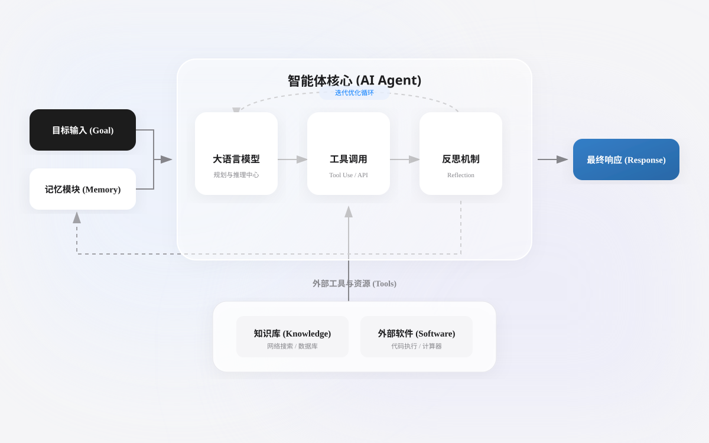
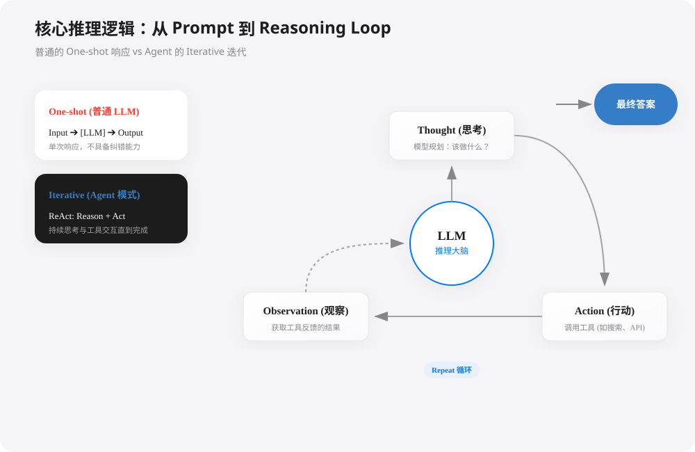
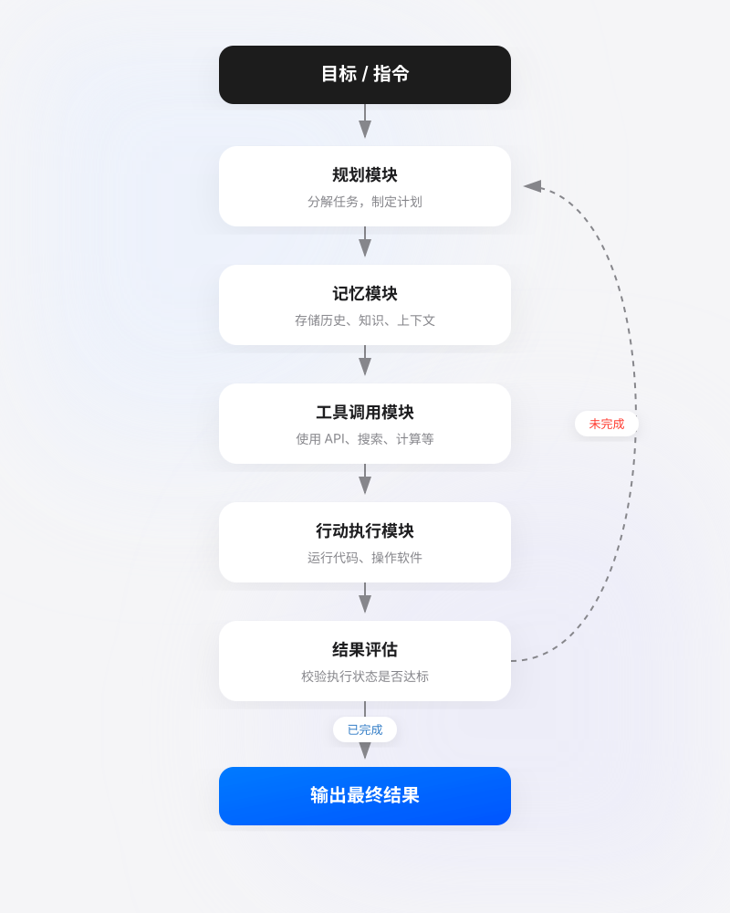

AI Agent 紹介
今日のテクノロジーの波の中で、人工知能（AI）が生活と仕事に深く溶け込んでいる背後には、AIエージェント（知的エージェント）支えているのは対話アシスタントから自律タスクプログラムまでの中核となる概念——それは単なるチャットツールではなく、デジタル従業員のようにタスクを受け取り、ステップを分解し、動作を実行する自動化エンティティであり、タスクが操作フローに分解可能であれば、AI Agent に任せることができる。
Agent = LLM（頭脳） + Planning（計画） + Tool use（実行） + Memory（記憶）。
- LLM（頭脳）：中核となる推論エンジンとして、意図の理解、テキスト生成、論理的判断を担当する。
- Planning（計画）：複雑な目標（例：「技術サロンを企画して」）を実行可能なステップに分解できる。
- Memory（記憶）：対話履歴（短期）を記録し、専門知識ベース（長期）を保存する。
- Tool Use（ツール使用）：必要に応じて Google 検索を調べたり、データベースを読んだり、Python コードを実行したりできる。

Agent と従来の AI モデルの違い
| 次元 | 従来の AI モデル | AI Agent |
|---|---|---|
| 対話方式 | 単一の入力と出力 | 複数ターンの対話、継続的なインタラクション |
| 意思決定能力 | 入力に基づいて直接推論する | 計画、振り返り、反復的な最適化 |
| ツール使用 | 外部ツールを主体的に呼び出せない | 検索、計算機、API などを呼び出せる |
| 記憶メカニズム | 現在のコンテキストのみ | 短期＋長期記憶 |
| 目標指向 | 単一の予測タスクを完了する | 複雑な目標を完了する |
| エラー処理 | 出力で終了 | 自己修正、再試行が可能 |
核心パターン：Prompt から Reasoning Loop へ
通常の LLM は単なるOne-shot（一回性）の応答であり、Agent の核心はIterative（反復）。
ReAct パターン（Reason + Act）は現在最も主流の Agent 推論ロジックである：
- Thought（思考）：モデルが現在何をすべきか、なぜそうするのかを説明する。
- Action（行動）：モデルがツールを選択する（例：
Google Search）。 - Observation（観察）：モデルがツールから返された結果を読み取る。
- Repeat（ループ）：最終的な答えが得られるまで上記のステップを繰り返す。

AI Agent の構成：人間のように考え、行動する
機能が完全な AI Agent は通常、人間の認知と行動のサイクルを模倣し、以下の主要モジュールを含む：

1. 計画モジュール：タスクの頭脳と指揮官
これは Agent の思考中枢である。ユーザーの曖昧で高レベルの目標（例：会社の前四半期の売上データを分析する）を、一連の明確で実行可能なサブタスクのステップに分解する役割を担う。
- タスク分解：大きな目標を小さなステップに分解する。例：1. データベースに接続する；2. Q3の売上データを抽出する；3. 製品と地域ごとに分類する；4. 前期比成長率を計算する；5. 可視化チャートを生成する。
- 振り返りと調整：Agent は各ステップの行動結果を評価する。失敗した場合（データベースに接続できないなど）、原因を振り返り、計画を調整する（例：別の接続方法を試す、またはユーザーにパスワードを要求する）。
2. 記憶モジュール：経験のノート
Agent は、一貫性のあるコンテキストベースの対話と操作を行うために記憶が必要である。
- 短期記憶：現在の対話のコンテキストを覚え、回答が主題から外れないようにする。
- 長期記憶：重要なインタラクション情報や学んだ知識をデータベースやベクトルデータベースに保存し、将来の照会と使用に備えることで、使えば使うほど賢くなる。
3. ツール呼び出しモジュール：柔軟な両手
これは Agent が思考者から実行者へと変わる鍵である。アプリケーションプログラミングインターフェース（API）を通じて外部ツールを呼び出し、自身の能力を拡張できる。
一般的なツール：
- 検索ツール：インターネットに接続して最新情報を取得する。
- 計算機/コードインタープリタ：数学的演算を行ったり、コードを実行してデータを処理したりする。
- ソフトウェア操作：API を通じてメールを送信したり、スプレッドシートを操作したり、スマートホームを制御したりする。
- 専門ツール：専門ソフトウェアを呼び出して、画像生成、音声合成、データ分析などを行う。
核心的な特徴
一人前の AI Agent は通常、以下の特徴を備えている：
1. 自律性（Autonomy）
- 人間の段階的な指示なしに、独立して動作できる
- 次に何をすべきかを自分で決定する
- 例：「明日上海行きの航空券を予約して」と言うと、Agent が自動的にフライトを検索し、価格を比較し、適切なオプションを選択する
2. 反応性（Reactivity）
- 環境の変化を感知し、迅速に対応できる
- 新しい情報に基づいて行動を調整する
- 例：予約中にフライトが欠航になったことを発見し、自動的に代替案を探す
3. 積極性（Proactivity）
- 受動的に応答するだけでなく、主体的に行動できる
- 目標指向の行動を持つ
- 例：航空券の価格変動を発見し、ユーザーに最適な購入タイミングを主体的に通知する
4. 社会的能力（Social Ability）
- 人間や他の Agent と対話できる
- 自然言語を理解し、複数ターンの対話を行う
- 例：予約プロセス中にユーザーの好み（窓側/通路側）を尋ねる
5. 学習能力（Learning）
- 過去のインタラクションから学習する
- ユーザーの好みとコンテキストを覚える
- 例：あなたが早朝便と窓側の座席を好むことを覚えている
AI Agent の発展の歴史
タイムライン

フェーズ1：概念の芽生え期（1950年代-2010年代）
- 1950年代：チューリングテストが提唱され、Agent の概念が初めて現れる
- 1990年代：マルチエージェントシステムの研究が興る
- 2000年代：ルール駆動のチャットボット（例：ELIZA）
- 特徴：ルールベースで、能力は限定的
フェーズ2：ディープラーニング発展期（2010年代-2020年）
- 2012年：ディープラーニングが ImageNet でブレークスルーを達成
- 2017年：Transformer アーキテクチャが登場
- 2018-2020年：BERT、GPT シリーズのモデルが発表される
- 特徴：理解能力は向上したが、依然として「受動的なツール」
フェーズ3：大規模モデル Agent 爆発期（2021年-現在）
- 2022年11月：ChatGPT が公開され、強力な対話能力を示す
- 2023年3月：GPT-4 + Plugins により、初めてツール呼び出しを実現
- 2023年3月：AutoGPT がオープンソース化され、自律 Agent の概念実証が行われる
- 2023年5月：LangChain、LlamaIndex などのフレームワークが成熟
- 2024-2025年：エンタープライズ級 Agent アプリケーションが大規模に実用化
- 特徴：真の自律性、ツール使用、タスク計画
マルチ Agent 協調モード
複数のエージェントが連携して、まるで1つのチームのように動作できます：
AI Agent の主要なタイプと応用シーン
その複雑さと自律性に応じて、AIエージェントは異なるタイプに分類でき、さまざまなシーンに応用できます：
| タイプ | 特徴 | 応用シーンの例 |
|---|---|---|
| 単一タスクエージェント | 特定の1つのことを完了することに集中し、機能が特化しています。 | スマートカスタマーサービスのチャットボット、自動データ入力アシスタント、個人スケジュールリマインダーアシスタント。 |
| マルチモーダルエージェント | テキスト、画像、音声など複数の情報を理解・処理できます。 | スケッチからWebサイトのコードを生成、医用画像を分析してレポートを生成、動画コンテンツの自動要約。 |
| 自律エージェント | 高い自律性を持ち、長期的に稼働して複雑な目標を能動的に管理できます。 | 自動運転車、自動化株式取引システム、インテリジェントゲームNPC（ノンプレイヤーキャラクター）。 |
| シミュレーションエージェント | 仮想環境でシミュレーション、テスト、トレーニングを行います。 | ロボットの把持タスク訓練、都市交通流量最適化のシミュレーション、新薬開発の分子シミュレーション。 |
現在注目されている実際の応用：
- AIプログラミングアシスタント：Devinのように、要件分析からコーディング、テスト・デプロイまでの全プロセスを自律的に完了できます。
- AI研究アシスタント：大量の文献を自動で読み、仮説を立て、実験計画を設計します。
- パーソナル生活アシスタント：メールとスケジュールを管理し、自動で食事を注文したり、買い物の価格比較をしたりします。
- 企業プロセス自動化：経費精算書を自動処理し、週次レポートを生成し、顧客契約をフォローアップします。
よくある課題と限界
幻覚問題（ハルシネーション）
エージェントはもっともらしく見えて実際には誤った情報を生成する可能性があり、検索拡張と検証メカニズムによってリスクを低減する必要があります。
スコープクリープ（範囲の逸脱）
自律性が高すぎると、エージェントが想定範囲を超えた操作を実行する可能性があり、明確な権限境界を設定する必要があります。
コスト管理
複数回の反復でLLMやツールを呼び出すとコストが高くなるため、呼び出し戦略とキャッシュメカニズムを最適化する必要があります。
セキュリティとプライバシー
エージェントが機密データにアクセスする可能性があるため、厳格なアクセス制御と監査メカニズムを実施する必要があります。
段階的自律
簡単なタスクから始め、徐々にエージェントの自律権限を増やし、段階的に進めます。
人間による監督
重要な意思決定ポイントに人間のレビューを設定し、効率と安全性のバランスを取ります。
継続的評価
完全な評価指標体系を構築し、定期的にエージェントのパフォーマンスをテスト・最適化します。
フォールトトレランスメカニズム
リトライ、フォールバック、アラートなどのメカニズムを実装し、システムの安定性を確保します。
将来の発展トレンド
マルチモーダル対話の深化
エージェントは視覚、聴覚、触覚などのマルチモーダル知覚能力をより良く統合し、より自然な人機対話を実現します。
マルチエージェント協調システム
複数の専門エージェントが連携して、「AIチーム」のような組織構造を形成し、複雑なタスクを処理します。
エッジコンピューティング展開
軽量エージェントはスマートフォン、IoTデバイスなどのエッジ側で動作し、ローカルなインテリジェントサービスを実現します。
垂直分野への深耕
医療、法律、金融などの専門分野のエージェントは、より強力なドメイン知識と推論能力を持つようになります。
クリックしてノートを共有
<p style="font-size:14px;">ノートは本記事の内容を拡張したものである必要があります！</p><br> <p style="font-size:12px;"><a href="../tougao.html" target="_blank">記事投稿はこちらをクリック</a></p> <p style="font-size:14px;"><a href="../w3cnote/runoob-user-test-intro.html" target="_blank">登録招待コードの取得方法</a></p> <h3 class="text-muted"><i class="fa fa-info-circle" aria-hidden="true"></i> ノートを共有する前に<a href=";.html" class="runoob-pop">ログイン</a>が必要です！</h3> <p><a href="../w3cnote/runoob-user-test-intro.html" target="_blank">登録招待コードの取得方法</a></p>